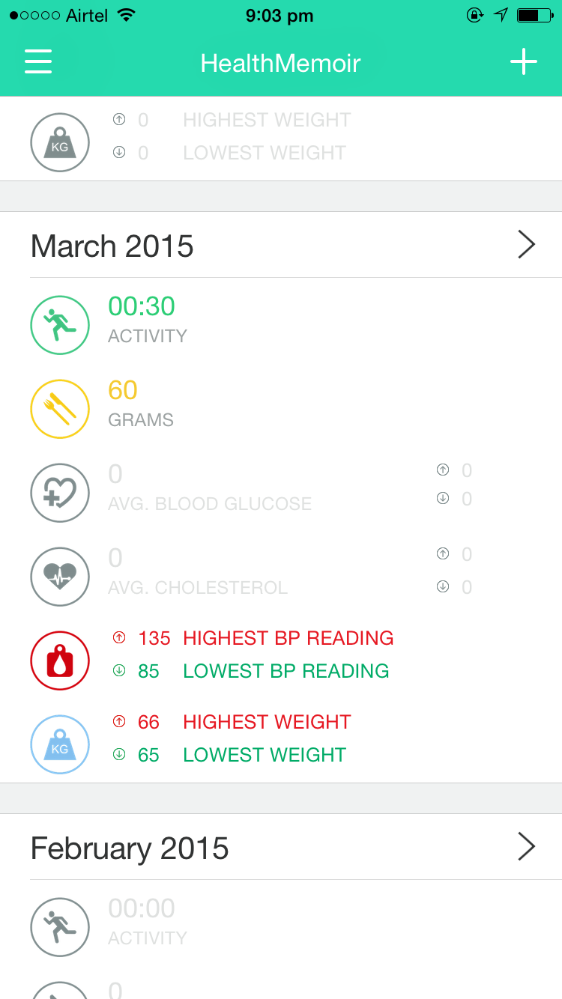
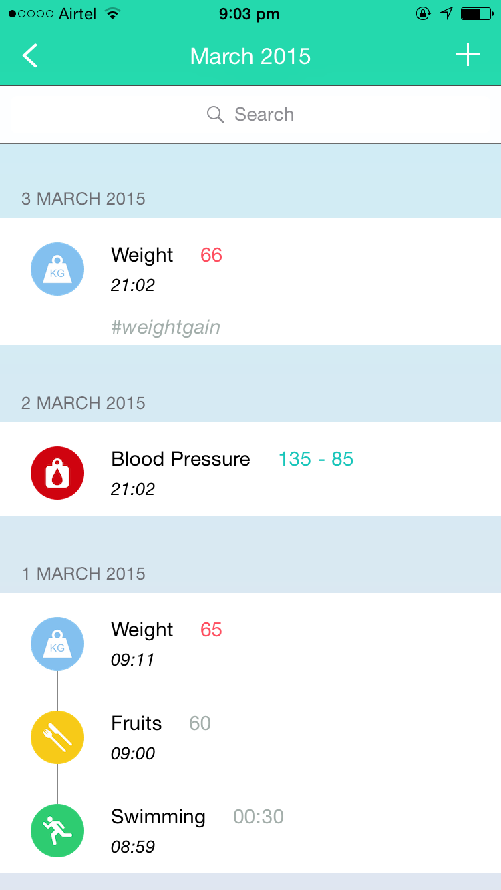
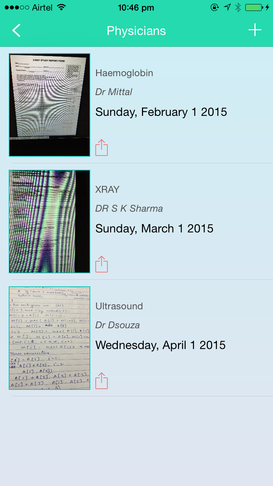
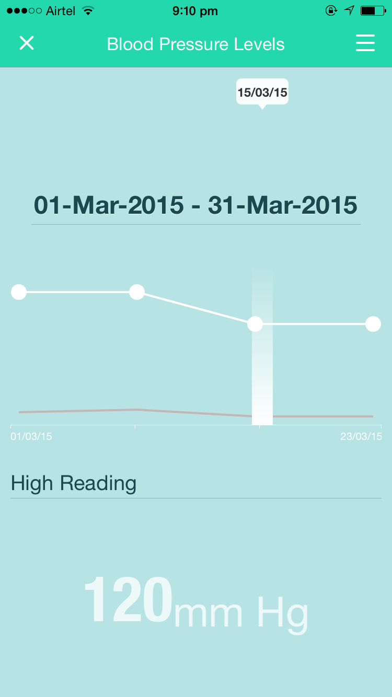
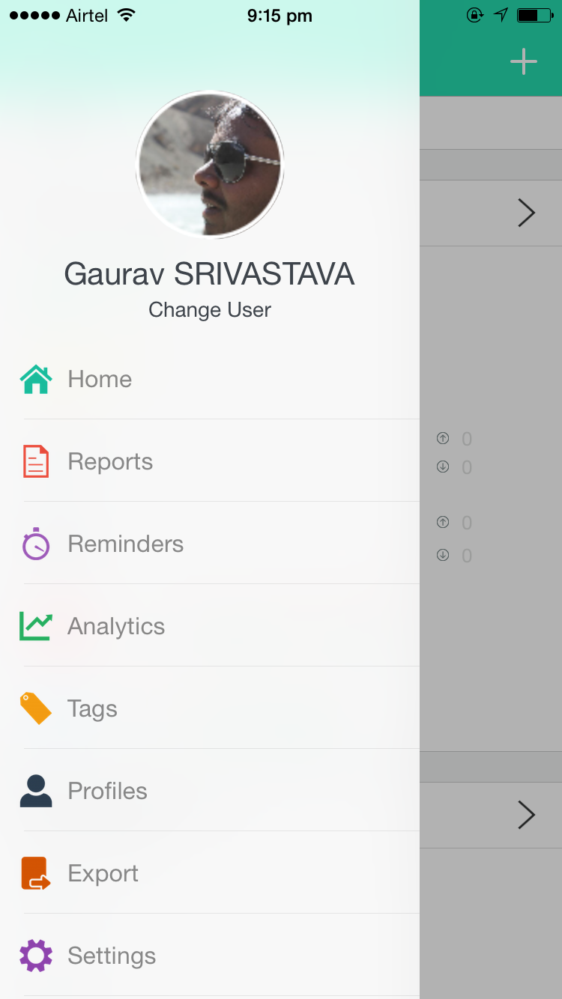

-
Journal
HealthMemoir is a health management application that helps you keep track of blood glucose, hypertension, medicines, cholesterol, weight, food and personal activities.
 -
Timeline
You can view your recorded data in a nicely arranged timeline.
 -
Medical Records
Store all your physical records including physician reports, drug prescriptions, lab results, hospital papers etc.
 -
Multiple Users
You can manage separate records for yourself and your family members. Set their preferences and track the thing they want to track(Diabetes, Blood Pressure, Weight, Cholesterol).
-
Analytics
See how you perform over a period; how much you deviate and what has been your average record.
 -
Extra
Set reminders, add tags to records for easy management, export them to pdf or csv etc.

HealthMemoir